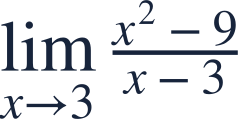
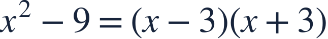
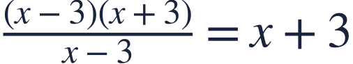
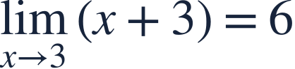
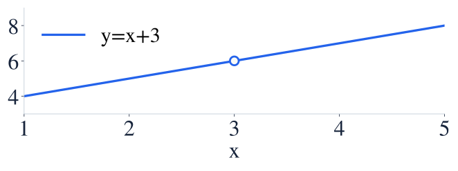
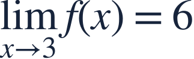
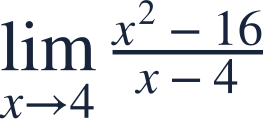

What a limit means
극한의 뜻

Can a limit exist when the function value is missing?
함숫값이 없어도 극한은 존재할 수 있을까요?

Can a limit exist when the function value is missing?
함숫값이 없어도 극한은 존재할 수 있을까요?
At x=3, the original denominator is zero. Examine nearby inputs instead.
x=3에서는 원래 분모가 0입니다. 그 점 주변의 입력을 살펴봅시다.
| x | f(x) |
|---|---|
| 2.90 | 5.90 |
| 2.99 | 5.99 |
| 3.01 | 6.01 |
| 3.10 | 6.10 |
Both sides approach the same output, 6. The value at 3 is a different question.
양쪽의 출력이 모두 6에 가까워집니다. 3에서의 함숫값과는 다른 질문입니다.

Factor the difference of squares to reveal the shared factor.
제곱의 차를 인수분해하면 공통인수가 보입니다.

Cancel only at nearby inputs where x−3 is nonzero.
x−3이 0이 아닌 주변 입력에서만 약분합니다.


Nearby outputs tend to 6, even though the original function has a hole.
원래 함수에 구멍이 있어도 주변 출력은 6으로 갑니다.

Cancellation does not redefine the original value at x=3.
약분했다고 원래 함수의 x=3 값이 생기지는 않습니다.

Factor first. Keep the restriction, then take the limit.
먼저 인수분해하고 정의역 제한을 유지한 뒤 극한을 구하세요.